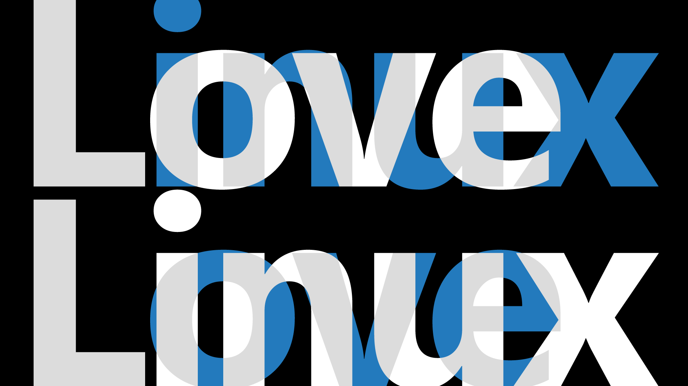
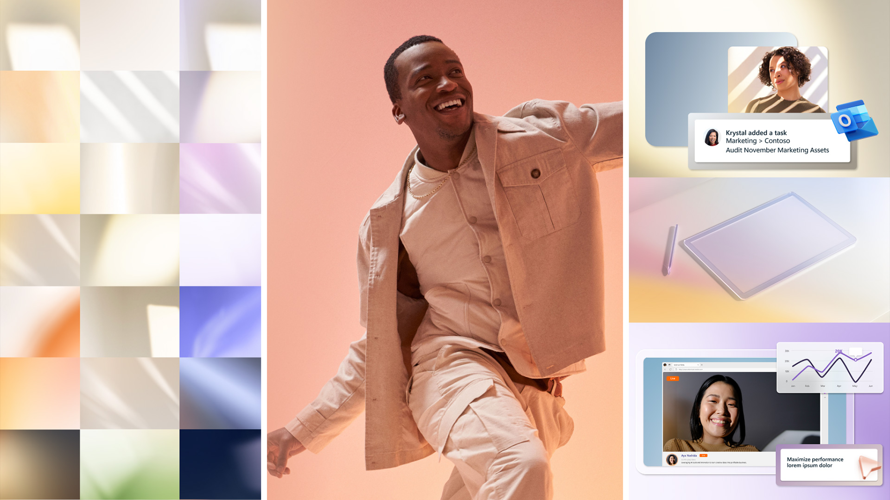
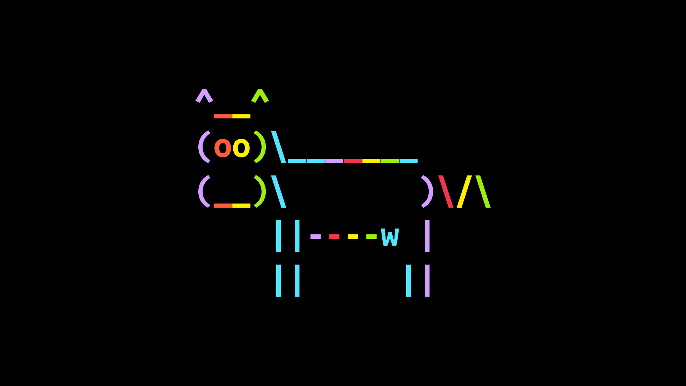
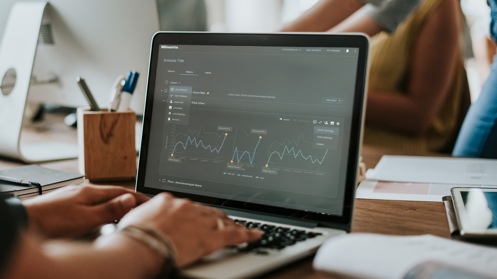
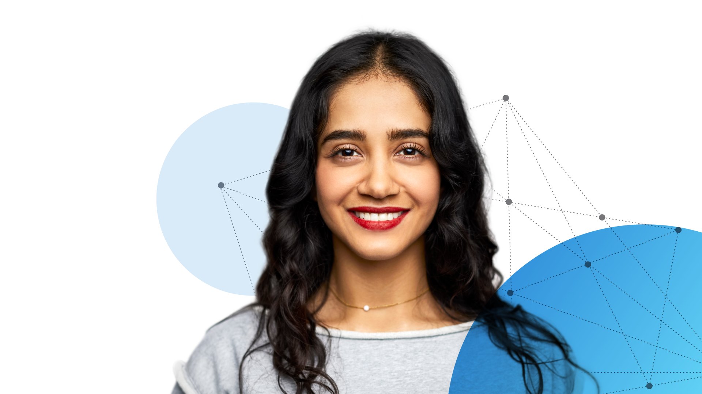

Hello, I'm a multidisciplinary visual designer passionate about creating impactful, visually compelling experiences. I'm happiest building thoughtful systems, crafting images, and shaping interactive prototypes—component-driven UI, clear flows, and motion that supports the story. I prioritize doing it right over doing it fast, iterating until the solution is clear, durable, and production-ready. Outside of design, I mostly think about food and my two dogs, Luna and Max.
Projects
Motion Reel
Collection of motion pieces.
Microsoft Azure Ads
A range of eBook ads promoting Microsoft Azure.
Microsoft Commercial House Style Toolkit
Guidelines, templates, and assets that help teams create consistent, scalable Microsoft content.
Azure Open Source Day
Image creation and designs for event visuals.
MDmetrix App
End-to-end UX for a Seattle Children's Hospital app.
Microsoft Build Event
Concept creation, design, and motion storyboard for event visuals.
Experience
Senior Visual Designer · Microsoft
Shaped Microsoft's commercial portfolio through system-driven, on-brand creative across social, email, web, eBooks, and motion. Executed and evolved visual systems that balanced storytelling, scalability, and production efficiency across campaigns. Collaborated with creative leadership and cross-functional partners to translate strategic briefs into cohesive, reusable design solutions. Contributed to visual frameworks that improved cross-channel consistency while meeting brand and accessibility standards.
- Concept development · Brand systems · Visual storytelling · Motion storyboards · Image creation · Mentorship · Production collaboration
UX & Visual Designer · Freelance
Partnered with clients across healthcare, e-commerce, and technology to deliver UX and visual design solutions from early concept through production. Led the end-to-end UX redesign of a Seattle Children's Hospital app (via MD Metrix), from research and stakeholder interviews to wireframes and interactive prototypes. Supported Amazon's Home retail site with design and production work across teams. Through POSSIBLE, developed concepts and production assets for Lenovo's Black Friday homepage and created a redesign proposal for Microsoft's IT Showcase website as part of a campaign pitch.
- User flows · UI design · Research · Interaction & motion · Concept development · Production-ready assets
Visual & Motion Designer · Rational
Contributed visual and motion design for global social campaigns supporting Acer and Predator. Played a key role in concepting and producing platform-ready creative that balanced brand expression, motion, and campaign objectives. Worked closely with marketing and creative teams to deliver cohesive, on-brand content optimized for international audiences and social platforms, supporting consistent brand presence across global markets.
- Campaign concepting · Visual design · Motion graphics · Social content · Production-ready assets
Production Lead · POSSIBLE
Led and mentored a production team delivering responsive design solutions for Microsoft device sites, including HoloLens, Surface, Xbox, Microsoft Band, and Accessories. Supported high-volume, multi-platform launches by ensuring consistent, accessible, and production-ready execution. Defined reusable template systems and production workflows that improved efficiency, reduced errors, and scaled delivery across teams. Partnered closely with in-house and distributed designers and developers to maintain brand consistency and quality standards across platforms.
- Production leadership · Responsive web design · Design systems & templates · Cross-functional collaboration · Accessibility & quality standards